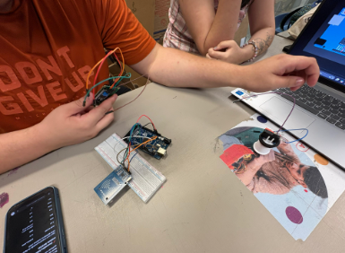
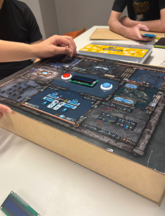
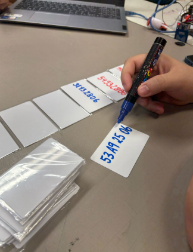
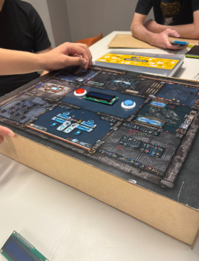
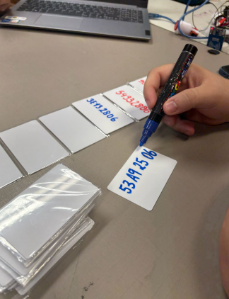
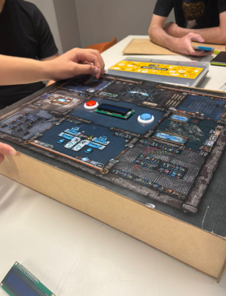
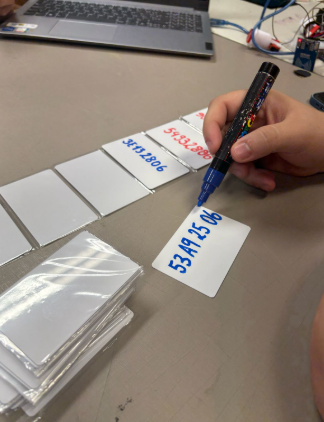
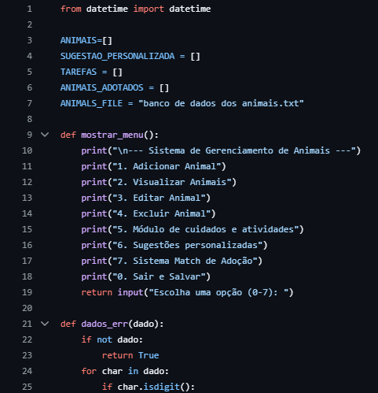
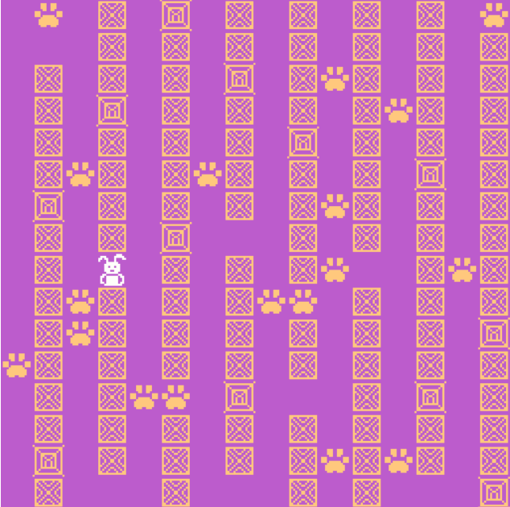
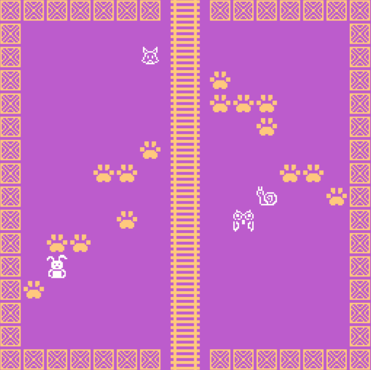

 





Jogo de Governaça
É um jogo de reputação, em que os jogadores precisam trabalhar juntos para manter o status da empresa e assim ganhar o jogo. O objetivo é treinar funcionários.

CRUD de Animais
Em gupo, desenvolvi um crud de adoção de ainimais, que gerencia informações de adoções, cuidados, vacinas e atividades diárias.


Jogo Bitsy
É um jogo infantil baseado na fábula "O Coelho e a Raposa". Um projeto programado com no-code.